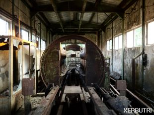
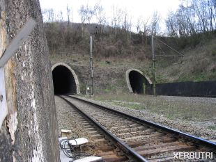
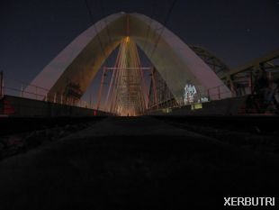
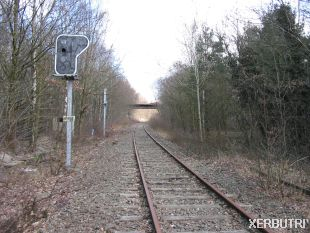

Ook wel Urban exploration, afgekort Urbex of U.E.
Urban exploring betekent het verkennen van objecten die door mensen gemaakt zijn.
De meeste urban explorers proberen bij het verkennen geen wetten te overtreden. Respect voor de locatie staat hoog
in het vaandel. Het motto is :
"Take nothing but pictures, leave nothing but footsteps"
In urban exploring zijn er verschillende stromingen:
Verlaten Gebouwen
De grootste en meest bekende vorm van urban exploring is het verkennen van verlaten gebouwen. Naast vele mede-explorers verkent ook Team Xerbutri verlaten gebouwen. De sfeer van een verlaten gebouw is onbeschrijflijk: De stilte, de natuur die het gebouw langzaam overneemt en de beloning van mooie foto's nadat je moeite hebt moeten doen om ze te maken.

Cave-Explorers
Tunnels voor verkeer, grotten en rioleringwerken. De reden om te gaan is voor ieder werk anders. De NATO-grotten hebben we bezocht vanwege hun militair verleden. De mergelgrotten vanwege de mooie tekeningen en de uitdaging om niet te verdwalen. Verlaten treintunnels bezoeken we om een stuk treinhistorie vast te leggen. Treintunnels die in gebruik zijn puur om de adrenalinekick.
Er is een groep explorers die zich ook bezig houdt met verkennen van rioleringsystemen en metrogangen. Team Xerbutri vindt het risico in metro's en rioleringen te groot. In de nauwe drukke metrotunnels is er aanrijdingsgevaar. In riolering hangen vaak giftige gassen, bacteriën en schimmels waar je op zijn best ziek van wordt. Voor ons ligt daar de grens.

Infiltratie
Er zijn ook urban explorers die gebouwen verkennen die nog steeds in gebruik zijn. Dit wordt infiltratie of reality hacking genoemd. Ons bezoek aan in gebruik zijnde treinbruggen is een soort van real life hacking, maar tegelijkertijd levensgevaarlijk.

Overig
Dan houden we nog genoeg andere objecten over, zoals verlaten spoorwegen, bruggen en nutteloze bouwwerken. De laatste zijn bouwwerken waarvan de bouw is gestart, maar nooit zijn afgemaakt. In België zijn er veel te vinden vanwege de wafelijzerpolitiek. Maar ook in andere plekken in Europa zijn hier voorbeelden van te vinden.

Artikel voor het laatst bijgewerkt op 06 september 2018
Galerij
Tik op de foto om alle foto's van Urban Exploring te bekijken in de fotoviewer